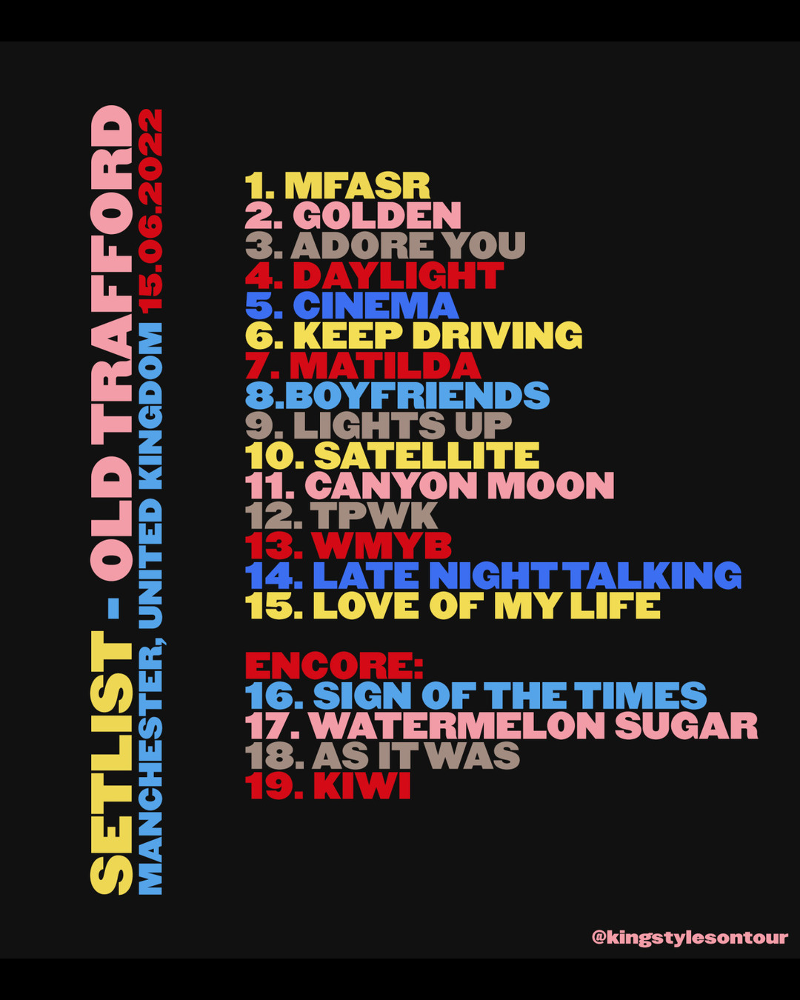
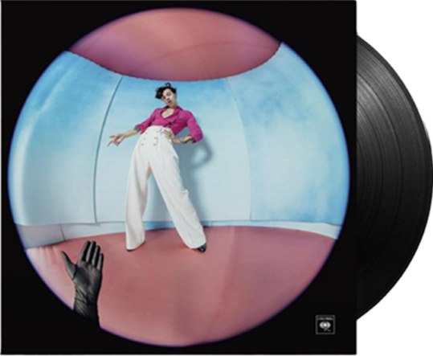
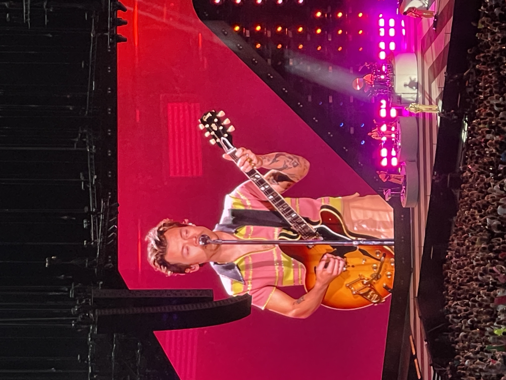
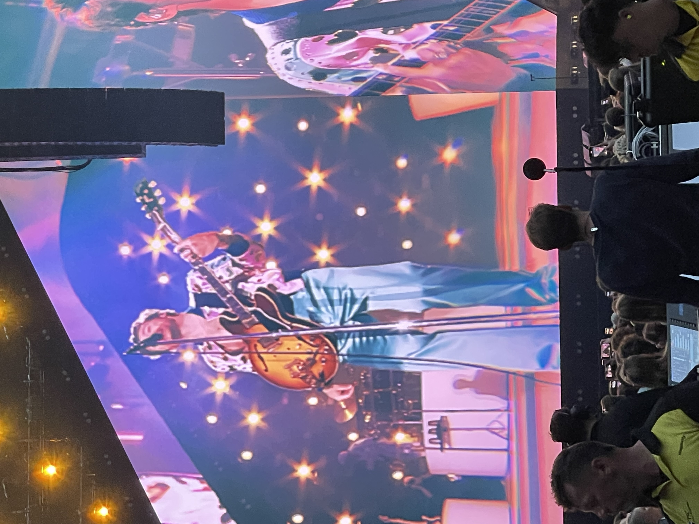
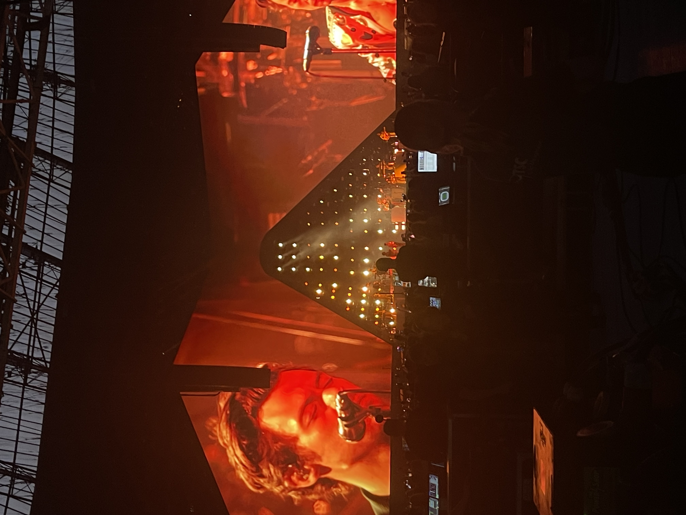
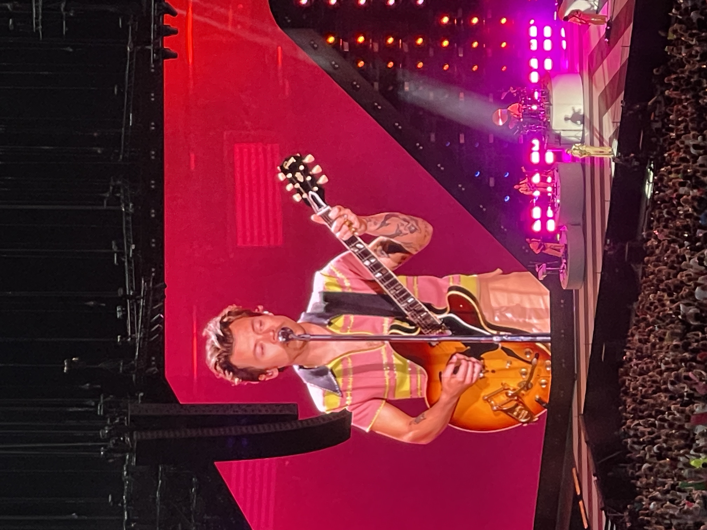
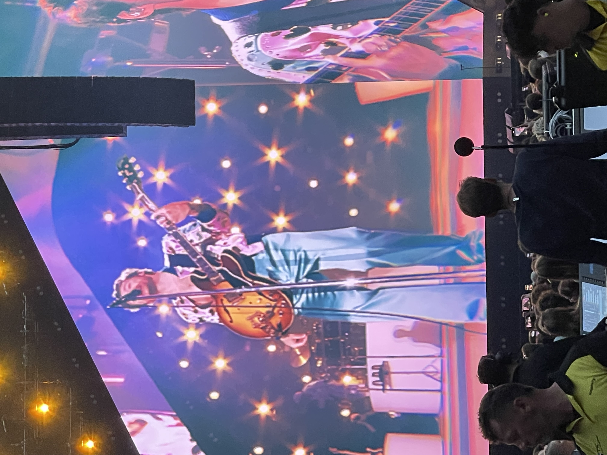
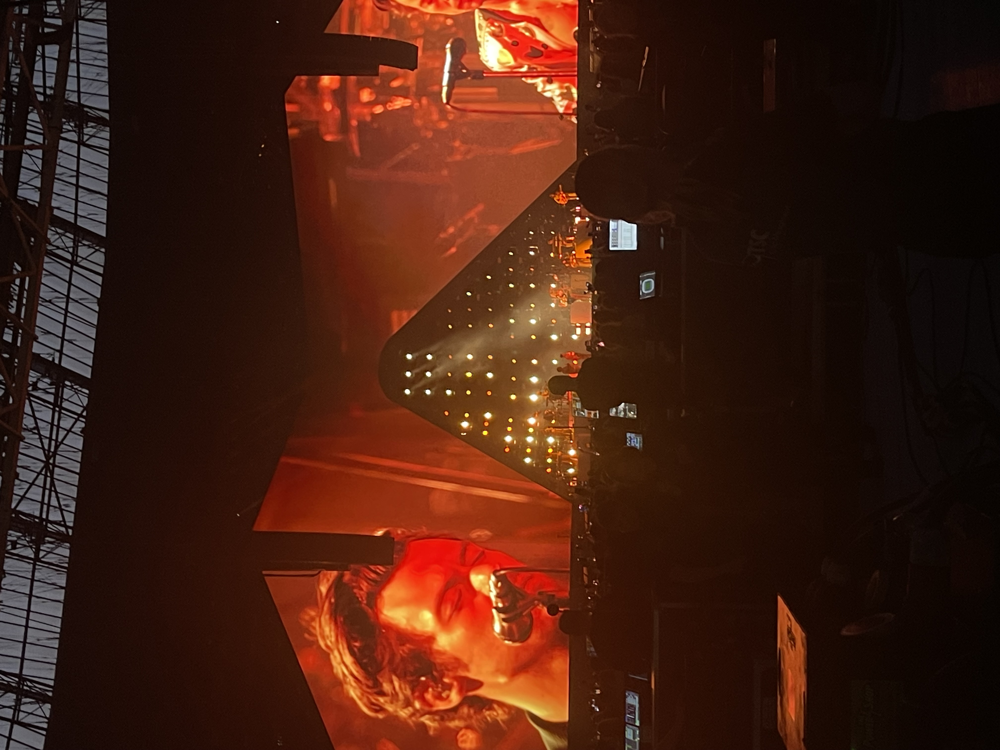

Harry Styles
Harry Styles the ex singer of the world famous boy band One Direction, the young man from Manchaster didn't sit still after the break up of the band. With his second album Fine Line he tours all around the world selling out arena's all over the globe.
 listen to Fine Line on Spotify!
The setlist of Fine Line excistst of 19 songs in total, wich include cover songs and some old clasic One direction songs.
 





Fine Line, Amsterdam Johan Cruiff Arena 2023
My rating of the love on tour concert is a solid 7/10. The concert itself was great, Harry himself was very energetic with the crowd and his singing was great. However the sound quality in the arena was super bad, i stood right underneath a speaker my 2nd day and the sound quality was not great. But the vibes of the concert itself was an amazing expierence!
Fine Line, Amsterdam Johan Cruiff Arena 2023.
For this concert there was a fanproject during the song 'Fine Line where fans put colour paper over their flashlights during the show to make a blue and pink light. Every show has this fanproject which i find super cute.
About the venue
The venue where Love on Tour took place was Johan Cruijff Arena (Johan cruijff Boulevard 1,1101 AX Amsterdam) in Amsterdam, this venue excists of a standing pit with a capacity of 55.885 people and two rings of seating tickets. You can get to the venue by train (Bijlmer Arena) then it's a short 5 minute walk to the venue itself. There is also a parking space by the arena for which you need to buy an extra parking ticket besides your concert ticket.